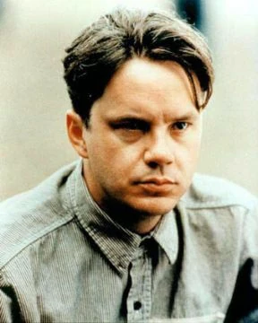
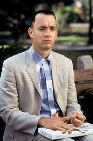
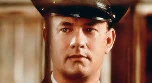
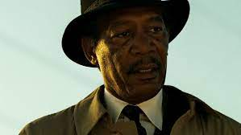
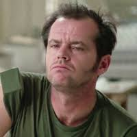

| Poradie | Nazov filmu | Rok vydania | Hodnotenie v % |
|---|---|---|---|
| 1. |
Vykoupení z věznice Shawshank
Andrew Dufresne |
1994 | 95,3 % |
| 2. |
Forrest Gump
Forrest Gump |
1994 | 94,5 % |
| 3. |
Zelená míle
Paul Edgecomb |
1999 | 92,9 % |
| 4. |
Sedm
William Somerset |
1995 | 95,5 % |
| 5. |
Přelet nad kukaččím hnízdem
Randle Patrick McMurphy |
1975 | 92,4 % |
| 6. | Schindlerův seznam | 1993 | 92,3 % |
| 7. | Kmotr | 1972 | 91,8 % |
| 8. | Dvanáct rozhněvaných mužů | 1957 | 91,4 % |
| 9. | Nedotknutelní | 2011 | 91,3 % |
| 10. | Pelíšky | 1999 | 91,2 % |
| 11. | Terminátor 2: Den zúčtování | 1991 | 90.9 % |
| 12. | Pulp Fiction: Historky z podsvětí | 1994 | 90,8 % |
| 13. | Kmotr II | 1974 | 90,7 % |
| 14. | Pán prstenů: Společenstvo Prstenu | 2001 | 90,6 % |
| 15. | Pán prstenů: Návrat krále | 2003 | 90,6 % |
| 16. | Mlčení jehňátek | 1991 | 90,5 % |
| 17. | Tenkrát na Západě | 1968 | 90,5 % |
| 18. | Temný rytíř | 2008 | 90,4 % |
| 19. | Gran Torino | 2008 | 90,3 % |
| 20. | Matrix | 1999 | 90,2 % |
"Vykoupení z věznice Shawshank" (anglicky "The Shawshank Redemption") je americký film z roku 1994, režírovaný Frankem Darabontem a založený na povídce od Stephena Kinga. Film sleduje příběh Andyho Dufresneho (hraje jej Tim Robbins), bankovního účetního, který je odsouzen na doživotí za vraždu své manželky a jejího milence, i když se tvrdí, že je nevinný. Je poslán do věznice Shawshank, kde se stává blízkým přítelem jiného vězně, Reda (hraje jej Morgan Freeman). Andy se postupně stává důvěrníkem vězeňského personálu a dokáže využít svých účetních schopností pro různé úkoly. Pomáhá vězeňskému správci s účetnictvím, zlepšuje vězeňskou knihovnu a pomáhá ostatním vězňům se svými radami. Nakonec se mu podaří dokázat svou nevinu a utéct z věznice Shawshank. Film je považován za klasiku amerického filmu a často se umisťuje v žebříčcích nejlepších filmů všech dob. Vypráví o naději, přátelství a touze po svobodě.